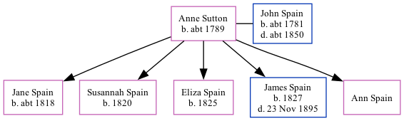

Anne Sutton, the wife of John Spain (the 3 times great-grandfather of Nigel Horne), was born in Staple, Kent, England c. 17891,2 and married John (a laborer with whom she had 5 children: Jane, Susannah, Eliza, James and Ann) in Stourmouth, Kent, England on Jun 30, 18173 (According to KFHS02/07, Anne Sutton was a widow at marriage, so Sutton was probably not her maiden name.).
Throughout her life, she lived in Eythorne, Kent in 18511; and in Canterbury, Kent in 18612.
1851 England Census Online publication - Provo, UT, USA: The Generations Network, Inc., 2005.Original data - Census Returns of England and Wales, 1851. Kew, Surrey, England: The National Archives of the UK (TNA): Public Record Office (PRO), 1851. Data imaged from the National
1861 England Census Online publication - Provo, UT, USA: The Generations Network, Inc., 2005.Original data - Census Returns of England and Wales, 1861. Kew, Surrey, England: The National Archives of the UK (TNA): Public Record Office (PRO), 1861. Data imaged from the National
Public Member Trees Online publication - Provo, UT, USA: The Generations Network, Inc., 2006.Original data - Family trees submitted by Ancestry members.Original data: Family trees submitted by Ancestry members.
Family Tree

Map
Generated by Ged2Site. Last updated on Jul 20, 2025